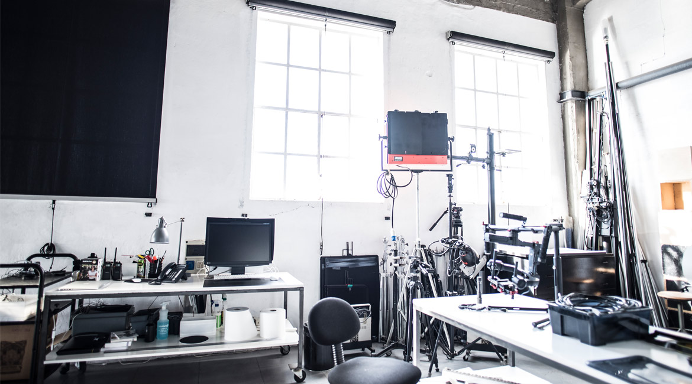

Lo studio fotografico Mattia Morgavi ha sede nell’area del porto di Genova.
All’interno della struttura operano professionisti consolidati in ambito fotografico, della post-produzione digitale e della produzione video. In un grande spazio attrezzato per le riprese e la post produzione fotografica, vengono prodotte immagini di alta qualità destinate alla realizzazione di brochure, cataloghi, campagne stampa, affissioni. Il continuo e costante investimento in risorse umane e tecnologiche, ha consentito di implementare i mezzi di produzione, dotando lo studio di attrezzature per le riprese digitali, in grado di produrre immagini ad altissima risoluzione. In quest’ottica, lo studio è in grado di fornire a tutte le aziende, un servizio di elevata qualità e velocità, pianificando direttamente con il cliente, le modalità operative dei servizi fotografici, in base alla tipologia di immagine richiesta.
Location
Lo studio ha sede nell’area delle riparazioni navali del porto di Genova. All’interno della struttura operano professionisti consolidati in ambito fotografico e della post-produzione digitale. In un grande spazio attrezzato per le riprese e la post produzione fotografica, vengono prodotte immagini di alta qualità destinate alla realizzazione di brochure, cataloghi, campagne stampa, contenuti per progetti web, affissioni. In quest’ottica, lo studio è in grado di fornire a tutte le aziende, un servizio di elevata qualità e velocità, pianificando direttamente con il cliente, le modalità operative dei servizi fotografici, in base alla tipologia di immagine richiesta.